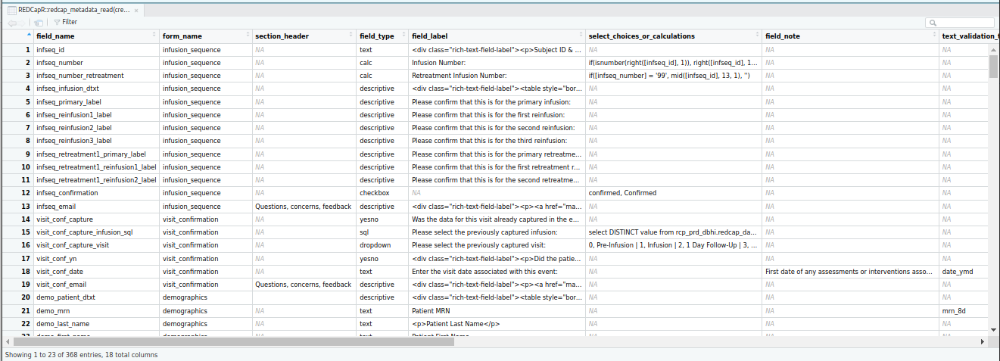
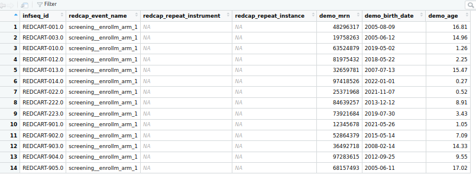
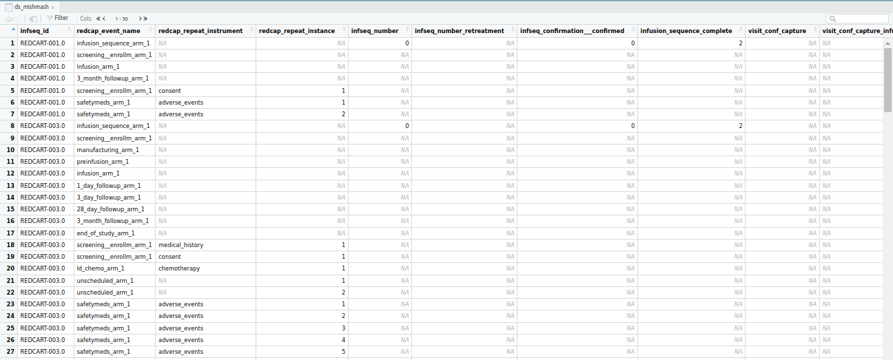

if (packageVersion("REDCapR") < "1.1.9005") {
install.packages("remotes")
remotes::install_github("OuhscBbmc/REDCapR")
}03_advanced
Advanced API Tasks REDCap using REDCapR
To start this final section, we will upload data using REDCapR. Let’s install with the newest version of REDCapR from GitHub.
Retrieve Secure Token
We’ll discuss tokens in more depth at the end of the workshop. For now, know that a “token” is a secret value that serves as your personal password to a specific REDCap project. We’ll retrieve it from a file stored in a (pretend) secured directory.
path_credential <- "../data-private/credentials.csv"
credential <- REDCapR::retrieve_credential_local(path_credential, 1L)
credential$redcap_uri
[1] "https://redcap.chop.edu/api/"
$username
[1] "myusername"
$project_id
[1] 1
$token
[1] "37BCFC38D45F10C47EAF4D8B97BFC32F"
$comment
[1] "CAR-T cell trials"Peek at Variables, Events, & Instruments
Stephan created fake data that mimics the real CAR-T investigation. The first snippet reveals info from the 368 variables. The second reveals info about the combinations of events & instruments.
REDCapR::redcap_metadata_read(
redcap_uri = credential$redcap_uri,
token = credential$token
)$dataThe data dictionary describing 368 fields was read from REDCap in 1.3 seconds. The http status code was 200.# A tibble: 368 × 18
field_name form_name section_header field_type field_label
<chr> <chr> <chr> <chr> <chr>
1 infseq_id infusion… <NA> text "<div clas…
2 infseq_number infusion… <NA> calc "Infusion …
3 infseq_number_retreatment infusion… <NA> calc "Retreatme…
4 infseq_infusion_dtxt infusion… <NA> descripti… "<div clas…
5 infseq_primary_label infusion… <NA> descripti… "Please co…
6 infseq_reinfusion1_label infusion… <NA> descripti… "Please co…
7 infseq_reinfusion2_label infusion… <NA> descripti… "Please co…
8 infseq_reinfusion3_label infusion… <NA> descripti… "Please co…
9 infseq_retreatment1_primary_… infusion… <NA> descripti… "Please co…
10 infseq_retreatment1_reinfusi… infusion… <NA> descripti… "Please co…
# ℹ 358 more rows
# ℹ 13 more variables: select_choices_or_calculations <chr>, field_note <chr>,
# text_validation_type_or_show_slider_number <chr>,
# text_validation_min <chr>, text_validation_max <chr>, identifier <chr>,
# branching_logic <chr>, required_field <chr>, custom_alignment <chr>,
# question_number <chr>, matrix_group_name <chr>, matrix_ranking <chr>,
# field_annotation <chr>REDCapR::redcap_event_instruments(
redcap_uri = credential$redcap_uri,
token = credential$token
)$data107 event instrument metadata records were read from REDCap in 1.0 seconds. The http status code was 200.# A tibble: 107 × 3
arm_num unique_event_name form
<int> <chr> <chr>
1 1 infusion_sequence_arm_1 infusion_sequence
2 1 screening__enrollm_arm_1 demographics
3 1 screening__enrollm_arm_1 cohort_phase_assignment
4 1 screening__enrollm_arm_1 medical_history
5 1 screening__enrollm_arm_1 diagnosis_extent_of_cancer
6 1 screening__enrollm_arm_1 eligibility
7 1 screening__enrollm_arm_1 consent
8 1 screening__enrollm_arm_1 physical_exam
9 1 screening__enrollm_arm_1 vital_signs
10 1 screening__enrollm_arm_1 hematology
# ℹ 97 more rowsIf important details are obscured, use View() to see things in a nice scrollable table inside RStudio:
View(
REDCapR::redcap_metadata_read(
credential$redcap_uri,
credential$token
)$data
)
Download Records with a clean grain, part #1
Downloading records from REDCap is easy for classic projects (ie, non-longitudinal & non-repeating). Just pass the url & token to REDCapR::redcap_read().
ds <-
REDCapR::redcap_read(
redcap_uri = credential$redcap_uri,
token = credential$token
)$dataYou can also specify constraints like forms, fields, & events for dataset that’s tight and relevant.
ds_pt <-
REDCapR::redcap_read(
redcap_uri = credential$redcap_uri,
token = credential$token,
# forms = c("infusion_sequence", "demographics"),
fields = c("infseq_id", "demo_mrn", "demo_birth_date", "demo_age"),
events = "screening__enrollm_arm_1",
verbose = FALSE
)$data
# View(ds_pt)
Download Records with a dirty grain
ds_mishmash <-
REDCapR::redcap_read(
redcap_uri = credential$redcap_uri,
token = credential$token,
verbose = FALSE
)$data
Download Records with a clean grain, part #2
ds_med <-
REDCapR::redcap_read(
redcap_uri = credential$redcap_uri,
token = credential$token,
fields = c("medhx_conditionhx", "medhx_start_date", "medhx_grade_1"),
events = "screening__enrollm_arm_1",
filter_logic = "[medhx_conditionhx] != ''",
verbose = FALSE
)$data
ds_med |>
dplyr::select(
infseq_id,
# redcap_event_name,
# redcap_repeat_instrument,
med_instance = redcap_repeat_instance,
condition_hx = medhx_conditionhx,
start_date = medhx_start_date,
grade_1 = medhx_grade_1
) |>
dplyr::mutate(
med_instance = as.integer(med_instance),
grade_1 = as.integer(grade_1),
)# A tibble: 11 × 5
infseq_id med_instance condition_hx start_date grade_1
<chr> <int> <chr> <date> <int>
1 REDCART-003.0 1 Pneumonia 2023-01-01 2
2 REDCART-012.0 1 Tachycardia 2020-01-03 5
3 REDCART-012.0 2 History of Anxiety 2020-02-11 2
4 REDCART-014.0 1 Hodgkin Lymphoma 2022-03-15 5
5 REDCART-014.0 2 Anxiety and depression 2022-04-05 4
6 REDCART-014.0 3 Comments 2022-04-13 3
7 REDCART-022.0 1 Conditions listed 2022-04-13 2
8 REDCART-022.0 2 Conditions listed NA 2
9 REDCART-022.0 3 Conditions listed 2022-04-13 5
10 REDCART-222.0 1 fdhgdf 2022-11-09 4
11 REDCART-903.0 1 rash NA 4